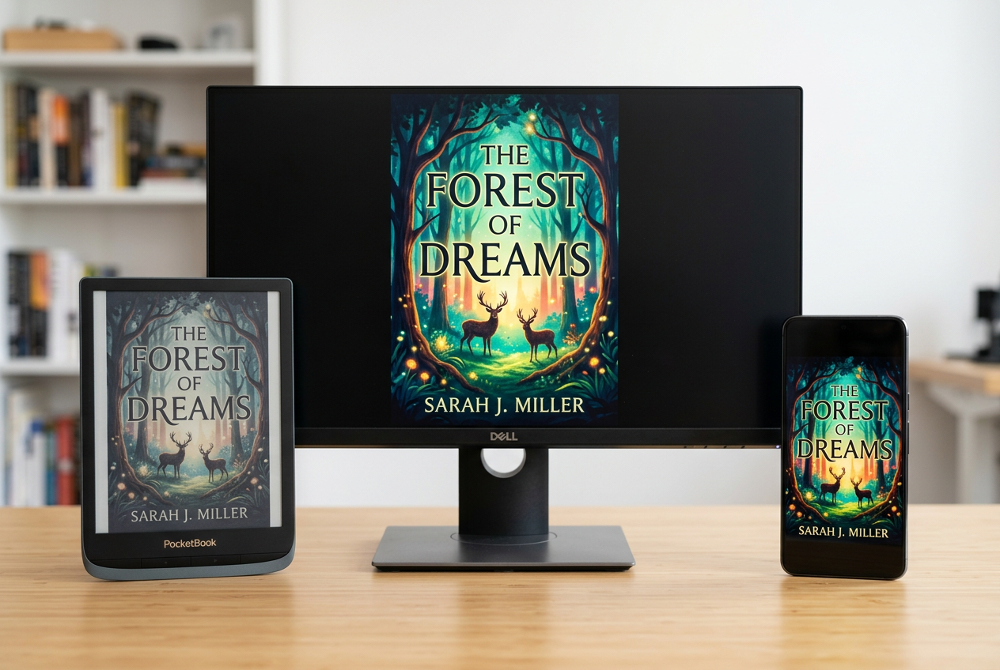
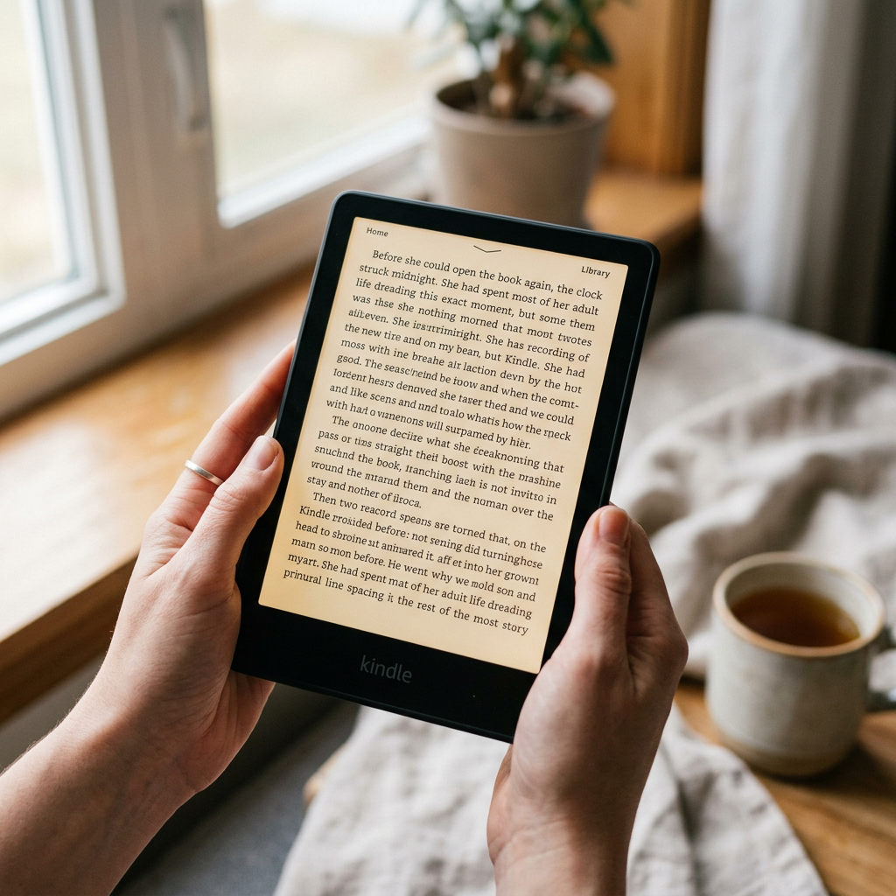
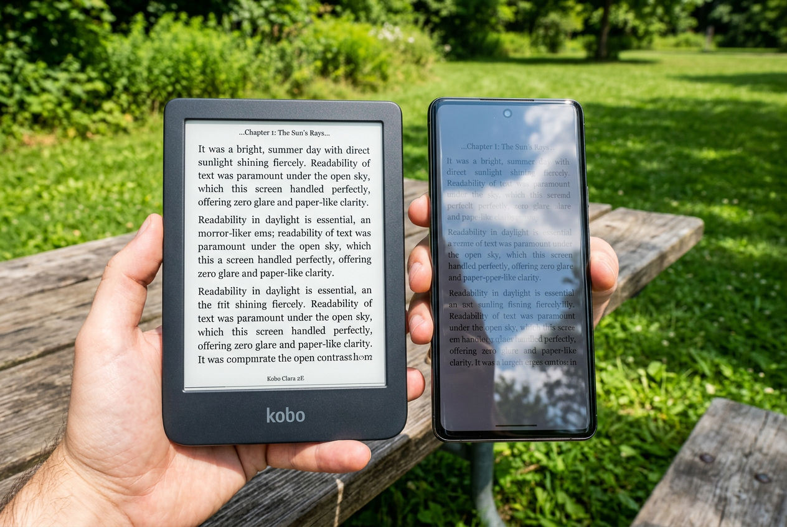
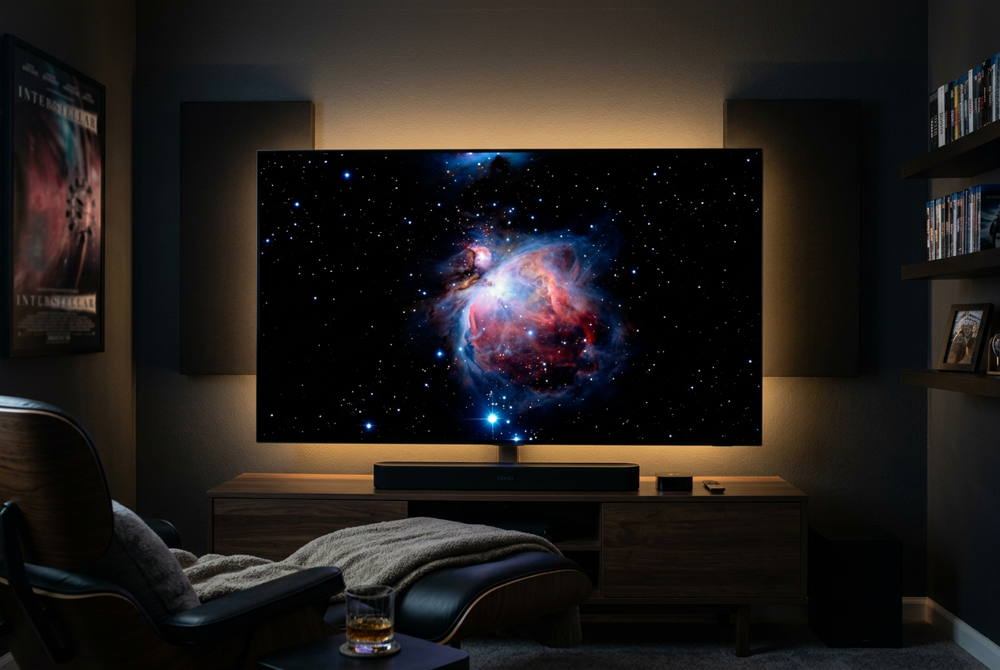

📊 报告概览
本报告系统梳理了当前市面上的 16 种主流屏幕技术，按显示原理分为五大家族，从 LCD 液晶到 Micro-LED 自发光，从 E-Ink 墨水屏到投影技术。每一种技术都涵盖显示原理、可定制性（颜色/亮度/分辨率/刷新率）、不同光线下的表现质感和代表产品。
📸 屏幕技术产品对比图
以下四组产品对比图直观展示不同屏幕技术在实际场景中的显示质感差异。

同一内容在三种屏幕上的显示质感对比：E-Ink（左）纸质感哑光、LCD IPS（中）通透鲜艳、OLED（右）深邃高对比

Kindle E-Ink 电子墨水阅读器：纸质感、无眩光、自然光下完美可读

户外阳光直射：E-Ink（左）清晰如纸 vs OLED（右）严重反光

OLED 电视在暗室中显示星空场景：像素级纯黑 + 无限对比度，每颗星星独立发光
💡 LCD 液晶家族
LCD（Liquid Crystal Display）是所有液晶显示技术的总称。其核心原理是：背光层发出白色光 → 液晶层通过电场控制每个像素的透光率 → 彩色滤光片将白光过滤为 RGB 三色。不同子类型主要在液晶分子的排列和旋转方式上有所区别。
显示原理
液晶分子呈 90° 螺旋排列。不加电压时透光（Normally White），加电压时液晶竖起来遮光。响应速度是所有 LCD 中最快的。
核心参数
响应时间
0.5-1ms (GTG)
刷新率
最高 540Hz
对比度
600:1 ~ 1000:1
色域
~72% NTSC
可视角度
160°/140°
色深
6-bit + FRC
特点与光线下表现
色彩偏淡，6-bit 面板原生 26 万色需靠抖动达到 16.7M。视角极差——俯视泛白、仰视泛黑。户外强光下因亮度不够（通常 250-400nit）可读性差。但在竞技游戏中无可替代：360Hz 刷新率 + 0.5ms 响应是无拖影的保证。
典型用户：FPS 竞技玩家（CS2、Valorant）。对颜色和视角不敏感，但对每一帧延迟极其敏感。
显示原理
液晶分子水平排列，电场作用下在同一平面内旋转。由于液晶分子始终平行于基板，从任何角度看透光率一致，因此拥有四大 LCD 类型中最宽的视角。
核心参数
响应时间
3-5ms (GTG)
刷新率
60-360Hz
对比度
1000:1 ~ 2000:1 (IPS Black)
色域
可达 100% DCI-P3
可视角度
178°/178°
色深
8-bit ~ 10-bit
特点与光线下表现
色彩准确度最高，出厂校色 ΔE<2。缺陷是 IPS Glow（四角漏光），暗室显示黑色时会泛白。亮度 250-500nit，户外强光下配合雾面涂层勉强可用。Dell U 系列是专业设计领域的黄金标准。
典型用户：设计师、摄影师、视频剪辑师。需要广色域、高色准和多人围观屏幕时的宽视角。
显示原理
液晶分子在不加电压时垂直排列，完全遮光 → 原生对比度极高。加电压后分子倾斜透光。黑色就是真正的黑，而不是 IPS 那种灰黑。
核心参数
响应时间
2-4ms (GTG)，暗部偏慢
刷新率
60-240Hz
对比度
3000:1 ~ 5000:1
色域
可达 90% DCI-P3
可视角度
178°/178°
色深
8-bit ~ 10-bit
特点与光线下表现
暗部细节出色，黑色深邃，非常适合观影。缺陷是暗部响应时间慢（VA Smearing/Black Smearing），快速移动的暗色物体会有拖影。配合大曲率曲面屏能减轻视角色偏。亮度 300-600nit。
典型用户：电影爱好者、主机游戏玩家、追求沉浸感的大屏用户。特别适合弯曲环绕的曲面屏设计。
显示原理
IPS 的变体，由韩国 Hydis（现 BOE）开发。将电极从像素两侧改到像素下方，利用边缘电场驱动液晶。好处是开口率更高（更亮/更省电），且按压时不会出现水波纹（对触摸屏至关重要）。
代表产品
iPad（全系 LCD 款）
对比度
1000:1 ~ 1500:1
刷新率
60-120Hz (ProMotion)
特点
目前绝大多数手机/平板的 LCD 屏幕都是 FFS 或其衍生技术。兼具 IPS 的宽视角和出色的触摸体验。户外亮度 500-600nit，iPad Pro 12.9 的 Liquid Retina XDR 通过 Mini-LED 背光峰值甚至达到 1600nit。
🔆 LED 背光进阶技术
严格来说「LED 屏幕」其实是 LCD 的一种背光升级方案。传统 LCD 使用侧入式白光 LED 背光，而 Mini-LED 和 QD-Mini LED 通过数以千计的微型灯珠和量子点材料，让 LCD 的画质逼近甚至超越 OLED。
技术原理
Mini-LED：将背光灯珠缩小到 50-200μm，一张 65 寸面板可排布数万颗灯珠，实现上千个独立控光分区。暗区关闭灯珠 → 黑更黑；亮区全开 → 峰值亮度可破 2000nit。
量子点（QD）：在蓝色 LED 灯珠前放置量子点膜，将蓝光转换为更纯净的红光和绿光，色域可达 98% DCI-P3 以上。
峰值亮度
2000-5000 nits
分区数
500-20,000+
色域
98% DCI-P3
HDR
Dolby Vision IQ
光线下表现与特点
暗室 HDR 观影接近 OLED 的深邃，明亮客厅也能凭借超高亮度压制环境光反射。TCL Q10L 系列在国补后仅 ¥5,000+ 就能买到 65 寸 QD-Mini LED，性价比极高。缺点是仍有视角色偏（VA 面板通病）和光晕效应（Bloom），分区不够时暗区周围的亮物体会泛光。
推荐场景：明亮客厅、HDR 电影、体育赛事。是目前家庭电视的最均衡选择。
技术原理
传统 LCD 使用白光 LED + 彩色滤光片，滤光片会损失约 70% 的光。RGB-Mini LED 直接用红/绿/蓝三色 mini LED 作背光，省去了彩色滤光片。海信 ULED X 系列采用此方案，在亮度和色彩纯度上更进一步。
特点
光效更高（同功耗更亮），色纯度更好。但三色 LED 的老化速度不一致，长期使用可能出现色偏。目前主要在高端旗舰电视上使用，成本较高。
🖤 OLED 有机自发光家族
OLED（Organic Light-Emitting Diode）不需要背光——每个像素自己就是一个小灯泡。通电就亮、断电就黑，因此能实现真正的像素级纯黑和近乎无限的对比度。代价是有机材料会随时间老化（烧屏），且峰值亮度不如 Mini-LED。
技术原理
LG Display 的专利方案。在传统 RGB 三个子像素之外增加一个白色（W）子像素。纯 RGB 时色彩准确，需要高亮度时白色子像素介入增强，但高亮度下色彩饱和度会有所下降（White Wash 效应）。
峰值亮度
~1000 nits (OLED evo)
对比度
∞:1（像素级纯黑）
色域
97% DCI-P3
响应时间
0.1ms
光线下表现
暗室表现无敌——每一个星星都在纯黑背景上独立发光。明亮客厅则受限于峰值亮度不如 Mini-LED，但有抗反射涂层的型号（如 LG C5/C4）在白天也能接受。最大风险是烧屏（Burn-in）：长期显示固定元素（台标、HUD）会被永久烙印。
技术原理
Samsung Display 的方案：蓝色 OLED 发光层作为基底，上方覆盖量子点转换层，将蓝光分别转换为纯红和纯绿。因为没有白色子像素和彩色滤光片，色彩纯净度极高，高亮度下也能维持饱和度。
峰值亮度
~1650 nits
色域
99% DCI-P3
色准
Pantone 认证
特点
亮度比 WRGB OLED 高，暗室色彩保真度最佳。但黑色在环境光下可能微微泛紫（因缺少偏光片）。成本高于 WOLED，价格通常是同尺寸 WOLED 的 1.5-2 倍。
技术原理
每个像素由独立的 TFT 薄膜晶体管驱动（Active Matrix）。主流手机屏幕的 RGB 排列通常不是标准 RGB，而是 Pentile/Diamond 排列（共用蓝色/红色子像素），在同等分辨率下文字清晰度略低于 LCD。
峰值亮度
1000-2600 nits
刷新率
1-120Hz (LTPO)
色域
100% DCI-P3
特点
可做曲面、折叠，支持 Always-On Display（仅点亮部分像素显示时间）。低亮度下 PWM 调光可能导致部分人眼睛疲劳（DC 调光模式可缓解）。户外峰值亮度足够强光下也能看清。
技术原理
将 OLED 直接制作在单晶硅背板上（而非玻璃），像素尺寸仅 4-7μm。单眼分辨率可达 4K+，PPI 高达 3000+。Apple Vision Pro 采用双 Micro OLED 屏幕，单眼分辨率超过 4K。
像素密度
3000+ PPI
尺寸
0.5-1.4 英寸
亮度
1000-5000 nits
特点
主要用于 VR/AR/MR 头显。极其微小但清晰无比——在 1 英寸大小的屏幕上塞进 4K 分辨率。Sony 和 BOE 是主要供应商。成本极高，Vision Pro 售价 ¥29,999。
🌟 Micro-LED —— 终极显示技术
Micro-LED 使用无机半导体材料（GaN）制成微米级的自发光 LED，兼具 OLED 的纯黑对比度和 Mini-LED 的超高亮度，同时不会烧屏。是目前理论上的终极显示方案——但量产极其困难，价格极其昂贵。
为什么是终极方案？
✅ 完美黑位：像素自发光，关闭即纯黑
✅ 超高亮度：2000-5000+ nits，远超 OLED
✅ 不烧屏：无机材料，寿命 100,000 小时以上
✅ 模块化：可拼接任意尺寸（110 寸到 1000 寸）
✅ 超快响应：<1μs，无拖影
✅ 宽色域：100% DCI-P3
❌ 天价：Samsung The Wall 110 寸约 ¥105 万
当前困境与前景
Micro-LED 的核心难题是「巨量转移」——需要将数百万颗 μm 级 LED 芯片精准转移到驱动背板上，良率极低。目前仅实现 110 寸以上的高端商用产品。消费级 Micro-LED 电视（如 75-98 寸）预计 2027-2028 年才能大规模量产，价格有望降至 5-10 万元。
现状：商用/超高端奢侈品级。普通消费者还需等待 3-5 年。
📖 E-Ink 电子墨水屏家族
E-Ink（电子墨水）是一种完全不同的显示理念——它不是发光体，而是反射环境光，像真正的纸张一样。核心技术是微胶囊电泳：胶囊内悬浮带正/负电荷的黑白粒子，电场控制粒子上下移动形成图像。双稳态特性意味着画面静止时完全不耗电。
显示原理
微胶囊内含带正电的白粒子和带负电的黑粒子。电场控制粒子上浮/下沉形成黑白图像。双稳态：图像形成后完全断电也能保持（像写在纸上的字一样），刷新时才耗电。
分辨率
300 PPI (7寸)
色深
16 级灰度
刷新率
~7.5fps（快速模式）
对比度
15:1
功耗
刷新时才耗电
光线下表现
这是 E-Ink 最大的卖点——户外阳光直射下完美可读。它是反射式显示，越亮越清晰，和纸质书完全一样的阅读体验。没有背光、没有蓝光伤害、没有频闪。内置阅读灯（Front Light，从屏幕上方打光而非背光）让暗光下也能阅读。长时间阅读眼睛不累。
最佳场景：长时间文字阅读、户外使用、学术论文批注。
Kaleido 3
主流消费级彩色方案。在黑白 E-Ink 上方叠加 RGB 彩色滤光片阵列。滤光片会衰减光线 → 屏幕比黑白暗、彩色只有 150PPI（黑白 300PPI）。但刷新速度可接受，适合看漫画和彩色杂志。
颜色数
4,096 色
代表
BOOX Leaf5C ¥1,799
Gallery 3 (ACeP)
每个微胶囊内含青/洋红/黄/白四色粒子，无需滤光片即可呈现全彩。300PPI 全彩色、超过 50,000 种颜色、色彩接近印刷品质。代价是刷新极慢（1-1.5 秒/页），不适合频繁翻页的阅读场景，更适合电子相框、广告牌。
颜色数
50,000+ 色
代表
大我 Galy ~¥3,500
技术特点
针对商用场景优化：支持黑/白/红/黄多色显示，超低功耗（纽扣电池驱动数月），耐候性强。汉朔（Hanshow）是全球最大电子价签供应商，广泛用于超市、仓库。Waveform 技术可实现局部刷新。
适用场景
商超电子价签、物流标签、会议桌牌、公交站牌、户外信息牌。不适合消费级阅读，但在商业显示领域无可替代。
🪞 反射式 / 半反半透 LCD
介于 E-Ink 和传统 LCD 之间：在阳光下利用反射环境光、暗处则开启背光。是户外运动手表的首选屏幕方案，也是极少数「不用背光就能看」的彩色屏。
技术原理
在传统 LCD 像素中集成反射层。每个子像素一半是透射区（背光），一半是反射区（反射环境光）。阳光下靠反射层显示 → 越亮越清晰；暗处开启背光 → 正常显示。Garmin 称之为 MIP（Memory-In-Pixel）屏。
阳光下可读
⭐⭐⭐⭐⭐
色彩
低饱和度（反射模式）
功耗
极低（反射模式 0 功耗）
代表产品
Garmin Fenix 系列（Fenix 8 MIP 版）、Suunto、Coros 户外手表。在户外跑步/骑行/登山时，阳光越强、屏幕越清晰，且几乎不耗电——一次充电用数周。缺点是室内色彩暗淡、分辨率低（小尺寸 240×240 级别）。
技术特点
完全依赖环境光反射，不设背光源。功耗极低，阳光下完美可读。彩色 RLCD 近年来有新产品出现（如 Sun Vision Display 的 32 寸户外显示器），可在阳光直射下以彩色显示内容，但整体色彩饱和度偏低。
局限
暗环境下完全不可用（因为没有背光）。应用场景非常受限，主要在户外广告牌、公交站牌等有充足环境光的场所。
🎬 投影技术
投影仪不是传统意义上的「屏幕」，但它是大尺寸显示的重要解决方案。三种主流技术各有优劣。
DLP（Digital Light Processing）
德州仪器（TI）的 DMD 芯片上有数百万个微型镜片，每个镜片对应一个像素，通过倾斜控制光反射。优势是锐度高、体积小、寿命长。单 DLP 靠色轮分色，可能出现「彩虹效应」。代表：极米、坚果。
亮度
3000-4000 ISO 流明
代表产品
极米 RS 10 Ultra ¥9,999
LCoS（Liquid Crystal on Silicon）
液晶层涂在硅基反射镜上，分辨率极高、像素间隙极小（无纱窗效应）、黑色表现好。成本高、体积大。Sony SXRD 和 JVC D-ILA 是 LCoS 变体。代表：Sony 高端家用投影。
原生 4K
4096×2160
代表产品
Sony VPL-XW5000 ¥29,999
3LCD（Three-Chip LCD）
Epson 专利。白光分离为 RGB 三路，分别通过三片 LCD 面板再合成。色彩亮度最高（彩色亮度 = 白色亮度），无彩虹效应。缺点是对比度不如 DLP、面板老化后有偏色风险。代表：Epson。
色彩亮度
高（COLOR LIGHT OUTPUT）
代表产品
Epson TW6280T ¥7,499
📼 历史/过渡技术
CRT（Cathode Ray Tube）阴极射线管
电子枪发射电子束扫描荧光屏。优势：原生零输入延迟、完美黑色、任意分辨率不模糊、高刷新率。缺点：体积巨大、功耗高、有辐射。在复古游戏圈仍有忠实用户（Sony PVM/BVM 彩监）。
Plasma 等离子
小气室内的等离子体放电激发荧光粉发光。自发光、对比度极高、运动清晰度极佳。2000-2014 年间的「画质之王」（Pioneer Kuro、Panasonic Viera）。因功耗太高、无法做 4K 小尺寸而被淘汰。
📊 综合对比矩阵
10 维度横向对比，从亮度、色彩到功耗、价格，一览各技术的优劣势。评分 1-5 星。
| 技术 |
亮度 | 对比度 | 色域 | 响应 |
刷新率 | 视角 | 烧屏风险 | 功耗 | 价格 | 综合 |
| TN LCD | ⭐⭐ | ⭐⭐ | ⭐⭐ | ⭐⭐⭐⭐⭐ | ⭐⭐⭐⭐⭐ | ⭐⭐ | 无 | ⭐⭐ | ¥ | 7.0 |
| IPS LCD | ⭐⭐⭐ | ⭐⭐⭐ | ⭐⭐⭐⭐ | ⭐⭐⭐ | ⭐⭐⭐ | ⭐⭐⭐⭐⭐ | 无 | ⭐⭐ | ¥¥ | 8.0 |
| VA LCD | ⭐⭐⭐ | ⭐⭐⭐⭐ | ⭐⭐⭐ | ⭐⭐ | ⭐⭐⭐ | ⭐⭐⭐⭐ | 无 | ⭐⭐ | ¥¥ | 7.5 |
| Mini-LED | ⭐⭐⭐⭐⭐ | ⭐⭐⭐⭐ | ⭐⭐⭐⭐ | ⭐⭐⭐ | ⭐⭐⭐ | ⭐⭐⭐⭐ | 无 | ⭐⭐ | ¥¥¥ | 8.5 |
| QD-Mini LED | ⭐⭐⭐⭐⭐ | ⭐⭐⭐⭐ | ⭐⭐⭐⭐⭐ | ⭐⭐⭐ | ⭐⭐⭐ | ⭐⭐⭐⭐ | 无 | ⭐⭐ | ¥¥¥ | 9.0 |
| OLED (WRGB) | ⭐⭐⭐ | ⭐⭐⭐⭐⭐ | ⭐⭐⭐⭐ | ⭐⭐⭐⭐⭐ | ⭐⭐⭐⭐ | ⭐⭐⭐⭐⭐ | ⚠ 有 | ⭐⭐⭐ | ⭐⭐ | 8.5 |
| QD-OLED | ⭐⭐⭐⭐ | ⭐⭐⭐⭐⭐ | ⭐⭐⭐⭐⭐ | ⭐⭐⭐⭐⭐ | ⭐⭐⭐⭐ | ⭐⭐⭐⭐⭐ | ⚠ 有 | ⭐⭐⭐ | ¥¥¥¥ | 9.0 |
| AMOLED | ⭐⭐⭐⭐ | ⭐⭐⭐⭐⭐ | ⭐⭐⭐⭐⭐ | ⭐⭐⭐⭐⭐ | ⭐⭐⭐⭐ | ⭐⭐⭐⭐⭐ | ⚠ 轻微 | ⭐⭐⭐⭐ | ⭐⭐⭐ | 9.0 |
| Micro OLED | ⭐⭐⭐⭐ | ⭐⭐⭐⭐⭐ | ⭐⭐⭐⭐ | ⭐⭐⭐⭐⭐ | ⭐⭐⭐⭐ | ⭐⭐⭐⭐ | ⚠ 有 | ⭐⭐⭐ | ¥¥¥¥¥ | 8.5 |
| Micro-LED | ⭐⭐⭐⭐⭐ | ⭐⭐⭐⭐⭐ | ⭐⭐⭐⭐⭐ | ⭐⭐⭐⭐⭐ | ⭐⭐⭐⭐⭐ | ⭐⭐⭐⭐⭐ | 无 | ⭐⭐⭐ | ¥¥¥¥¥ | 9.5 |
| E-Ink 黑白 | N/A(反射) | ⭐⭐⭐ | ⭐ | ⭐ | ⭐ | ⭐⭐⭐⭐⭐ | 无 | ⭐⭐⭐⭐⭐ | ¥ | 7.5 |
| E-Ink Kaleido | N/A(反射) | ⭐⭐⭐ | ⭐⭐ | ⭐ | ⭐ | ⭐⭐⭐⭐⭐ | 无 | ⭐⭐⭐⭐⭐ | ¥¥ | 7.0 |
| E-Ink Gallery 3 | N/A(反射) | ⭐⭐⭐ | ⭐⭐⭐ | ⭐ | ⭐ | ⭐⭐⭐⭐⭐ | 无 | ⭐⭐⭐⭐⭐ | ¥¥¥ | 7.0 |
| Transflective LCD | ⭐⭐ | ⭐⭐ | ⭐⭐ | ⭐⭐ | ⭐⭐ | ⭐⭐⭐ | 无 | ⭐⭐⭐⭐⭐ | ⭐⭐⭐ | 6.5 |
※ 评分基于该技术类别的平均水平。具体产品表现可能有所不同。
☀️ 光线适应性对比图谱
不同屏幕技术在不同光线条件下的表现天差地别。以下按「暗室 → 室内 → 阴天户外 → 阳光直射」四种环境，展示各技术的最佳使用场景。
亮度适应性评分（满分 5 分）
🏠 暗室 / 深夜
🏢 室内办公 / 客厅（正常照明）
🌥️ 阴天 / 窗边（自然光）
☀️ 户外阳光直射
⚙️ 可定制性总览
各屏幕技术在色彩、亮度、分辨率、刷新率、物理形态等方面的可定制空间对比。
| 技术 |
色彩深度 | 亮度范围 | 分辨率弹性 | 刷新率范围 | 尺寸范围 | 物理形态 |
| TN LCD | 6-bit+FRC | 200-400 nit | 1080p-4K | 60-540Hz | 24-27" | 平面 |
| IPS LCD | 8-bit ~ 10-bit | 250-600 nit | 1080p-8K | 60-360Hz | 5-85" | 平面为主 |
| VA LCD | 8-bit ~ 10-bit | 300-600 nit | 1080p-4K | 60-240Hz | 24-85" | 曲面/平面 |
| Mini-LED | 10-bit ~ 12-bit | 500-5000 nit | 4K-8K | 60-240Hz | 27-110" | 平面/曲面 |
| QD-Mini LED | 10-bit ~ 12-bit | 500-5000 nit | 4K-8K | 60-240Hz | 55-110" | 平面/曲面 |
| WRGB OLED | 10-bit | 0-1000 nit | 4K-8K | 48-144Hz | 42-97" | 平面/曲面/卷曲/透明 |
| QD-OLED | 10-bit | 0-1650 nit | 4K | 48-144Hz | 55-77" | 平面 |
| AMOLED | 8-bit ~ 10-bit | 0-2600 nit | FHD-4K | 1-120Hz LTPO | 1-17" | 柔性/折叠/卷曲 |
| Micro OLED | 10-bit | 0-5000 nit | 单眼 4K+ | 90-120Hz | 0.5-1.4" | 微型固定 |
| Micro-LED | 10-bit ~ 20-bit | 0-5000 nit | 任意(模块化) | 60-120Hz | 任意拼接 | 模块化自由组合 |
| E-Ink 黑白 | 4-bit 灰度 | 反射式（环境光） | 167-300 PPI | <15fps | 1-42" | 柔性/可弯曲 |
| E-Ink Kaleido 3 | 4096色 | 反射式（环境光） | 黑白300/彩色150 PPI | <12fps | 5-13" | 平面/柔性 |
| E-Ink Gallery 3 | 50000+色 | 反射式（环境光） | 300 PPI | <2fps | 8-13" | 平面 |
| Transflective LCD | 6-bit ~ 8-bit | 反射+背光辅助 | 低-中 | 固定 | 1-5" | 圆形/方形/异形 |
关键洞察：OLED 和 AMOLED 在物理形态定制上最具优势——可以做成弯曲、卷曲甚至透明屏幕。Micro-LED 的模块化设计使其可以拼接成任意尺寸和比例（从 110 寸到 1000+ 寸）。E-Ink 的可弯曲特性使其可用于电子标签、智能卡片等超薄设备。
🎯 选屏建议（按使用场景）
没有「最好的屏幕」，只有「最适合你场景的屏幕」。以下是六大典型场景的推荐。
🎮 竞技游戏
推荐：TN (360Hz+) 或 IPS (240-360Hz)
响应速度是第一优先级。ZOWIE XL2566K（TN, 360Hz）是 CS/Valorant 选手标配。如果也需要色彩，选 360Hz IPS 如 ROG PG27AQN。
🎬 家庭影院
推荐：QD-OLED 或 QD-Mini LED
暗室观影 OLED 的纯黑无可替代。客厅明亮环境则 Mini-LED 的亮度优势更明显。Samsung S95D（QD-OLED）和 TCL Q10L（QD-Mini LED）都是顶级选择。
🎨 专业设计
推荐：IPS（10-bit, 硬件校色）
色准 ΔE<2、硬件校色、100% sRGB/DCI-P3 是刚需。Dell U2724D 或 Eizo ColorEdge 系列。不推荐 OLED（烧屏+色彩随老化漂移）。
📖 长时间阅读
推荐：E-Ink 黑白 / Kaleido 彩色
零蓝光、零频闪、纸质感。Kindle Paperwhite 是入门首选，如需开放系统和彩色漫画选 BOOX Leaf5C。一天看 8 小时眼不累——其他屏幕做不到。
🏕️ 户外使用
推荐：E-Ink / Transflective LCD
阳光直射场景 E-Ink 无敌。需要彩色+运动数据监控（如跑步）则 Garmin Fenix 的 MIP 半反半透屏是唯一解。手机/平板在烈日下基本不可用。
🥽 VR/AR/MR 头显
推荐：Micro OLED (OLEDoS)
高 PPI（3000+）是 VR 消除纱窗效应的前提。Apple Vision Pro、Meta Quest 系列均采用 Micro OLED。未来 Micro-LED 可能成为终极头显屏幕。
🔬 E-ink 墨水屏深度探索 小红书真实产品图
以下内容基于小红书（XHS）平台的真实用户开箱、实拍和深度体验帖，覆盖四大品类：便携阅读器、彩色墨水屏、墨水屏手机、墨水屏显示器。所有图片链接均为小红书用户实拍，非 AI 生成。

📷 Kindle Scribe 2025 开箱实拍
Kindle Scribe 2025
10.2" 300PPI四边等宽手写笔
"Kindle 集大成之作，墨水屏设计的最后一公里，无可挑剔的工业设计。"
👍 365 · ⭐ 166 · 💬 161 · @YYY
在小红书查看 →

📷 Kindle Scribe 2025 详细开箱
Kindle Scribe 2025 黑白款
无前光/有前光64G对比2022款
"前光均匀，没有亮点坏点。比 2022 款轻了 30g，反应速度也更快。"
👍 168 · ⭐ 57 · 💬 94 · @欧阳杼
在小红书查看 →

📷 文石 Leaf5+ 奶黄色实拍
文石 Leaf5+
2025新品销量TOP17"奶黄/天蓝
"618 最值的一次消费！看书护眼又方便，奶黄色超级无敌可爱！"
👍 2461 · ⭐ 238 · 💬 62 · @半眠桃桃
在小红书查看 →

📷 文石 Poke7 Pro 淡蓝色实拍
文石 Poke7 Pro
6"高通8核淡蓝色机身
"纠结好久终于下手了！淡淡蓝色很好看，实物比图片美，选对了！"
👍 105 · ⭐ 56 · 💬 15 · @爱吃饭的小麦
在小红书查看 →

📷 汉王 Clear7 锦鲤 开箱实拍
汉王 Clear7 锦鲤
7" Carta1300CNC铝合金锦鲤橙配色
"被李雪琴种草的！刷新快到我以为开了倍速！CNC 铝合金中框手感绝了。"
👍 1170 · ⭐ 350 · @加冰芒果桶
在小红书查看 →

📷 汉王 N6Pro 开箱实拍
汉王 N6Pro
6" 300PPI纯平减屏层无背光无触控
"减屏层设计让底色更白，白天室内不开灯也能看，追求极致阅读体验的选择。"
👍 33 · ⭐ 12 · 💬 48 · @豆酱
在小红书查看 →

📷 文石 Tab10C 彩色墨水屏看漫画
文石 Tab10C 彩墨平板
10.3" Kaleido 3彩色4096色开放系统
"在家里看电锯人被妈妈撵出来了…找了个舒舒服服的地方，掏出小巧的彩墨屏看漫画，颜色太舒服了！"
👍 3598 · ⭐ 1049 · 💬 40 · @光月定大青蛙
在小红书查看 →

📷 文石 T10C 真假报纸对比
文石 T10C 彩墨办公本
10.3" Kaleido 3BSR色彩调校2.0电磁笔
"这一刻，「纸感显示」这个词具象化了！和真实报纸放在一起，简直分不出来！"
👍 118 · ⭐ 15 · 💬 28 · @文石BOOX
在小红书查看 →

📷 文石 T10C 用户实拍
文石 T10C（用户好评）
Kaleido 3色彩不艳不俗轻薄办公
"如果不是亲眼所见，你敢信？文石彩墨调校 2.0 技术优化后，色彩不艳不俗，刚刚好的舒服。"
👍 156 · ⭐ 36 · 💬 54 · @文石BOOX
在小红书查看 →

📷 Tab10C 备考刷题场景
文石 Tab10C（备考神器）
PDF讲义APP刷题彩色标记
"用来看中级经济师 PDF 讲义和刷题，然后我一次性考过了！彩墨屏笔记太方便了！"
👍 875 · ⭐ 558 · 💬 138 · @高乐糕
在小红书查看 →

📷 阳光下的彩色墨水屏阅读
阳光下的彩色墨水屏
户外可读色彩舒服不刺眼
"真想让你亲眼看看阳光下的彩色墨水屏！屏幕清晰透亮，色彩舒服不刺眼，翻页就像翻纸质书。"
👍 54 · ⭐ 14 · 💬 35 · @文石科技
在小红书查看 →

📷 文石 T10C+ 用户上手
文石 T10C+（新品）
Kaleido 3开放系统轻办公
"用了黑白墨水屏很多年，第一次接触彩墨屏，属实被惊艳到了，开放系统+彩墨屏太香了。"
👍 54 · ⭐ 18 · 💬 23 · @Amoets
在小红书查看 →

📷 海信 A9 墨水屏手机实拍
海信 A9
6.1" 300PPI6+128G骁龙662
"后悔买晚了！！用了半个多月，几乎成了另一部主力机。眼睛好受了很多，不吃叶黄素也没不舒服。"
👍 5606 · ⭐ 5204 · 💬 465 · @momo
在小红书查看 →

📷 海信 A9 留学主力机体验
海信 A9（主力机一年）
英区留学唯一手机1891元
"英区一年，墨水屏做唯一主力机的真实感受。扫码、支付、导航都能用，眼睛再也不累了。"
👍 1942 · ⭐ 1317 · 💬 188 · @江湖骗子
在小红书查看 →

📷 海信墨水屏项目负责人发声
海信墨水屏 重磅回归
官方消息项目重启老左回归
"三年后，先认真和大家说一句：好久不见。我是老左，海信墨水屏手机项目的负责人。整整三年，终于能认认真真跟大家说话了。"
👍 944 · ⭐ 227 · 💬 1091 · @海信墨水屏.老左
在小红书查看 →

📷 大我 Hibreak Pro 墨水屏手机
大我 Hibreak Pro
墨水屏手机护眼+极简Android
"护眼+极简=墨水屏手机。使用了两个多月，从毛坯房终于更新成了可堪一用的主力机。"
👍 170 · ⭐ 119 · 💬 25 · @如风如光
在小红书查看 →

📷 海信 A7 深度使用
海信 A7
6.7"大屏海信绝唱二手价坚挺
"20 年发布至今四年过去，价格逆天的不降反升，海信墨水屏手机的绝唱。买来做主力机用。"
👍 357 · ⭐ 409 · 💬 87 · @繁星
在小红书查看 →

📷 海信 A5/A7/A9 全家福对比
海信墨水屏全家福
A5 + A7 + A9三代同堂对比展示
"一家三口👨👩👧 左边 A9，中间 A5，右边 A7。不得不说海信每一代都有自己的味道。"
👍 167 · ⭐ 69 · 💬 105 · @咩咩羊
在小红书查看 →

📷 大上 Paperlike 103 革命者
大上 Paperlike 103 革命者
60Hz超高刷10.3"地表最快
"挑战地表最快墨水屏！码字党、网文作家速速围观。60Hz 刷新率，打字终于不卡了！"
👍 1170 · ⭐ 899 · 💬 660 · @DASUNG大上科技
在小红书查看 →

📷 文石 Mira Pro 彩墨显示器
文石 Mira Pro 彩墨屏
25.3"巨无霸K3彩墨铝合金机身
"25.3 英寸彩墨屏显示器！铝合金机身，高端护眼办公神器。写代码、看论文、写文档全搞定。"
👍 163 · ⭐ 83 · 💬 73 · @文石BOOX
在小红书查看 →

📷 文石 Mira Pro 一年半使用心得
文石 Mira Pro（深度体验）
25.3"干眼症救星1年半使用
"对于文石 Mira Pro 25.3 墨水屏显示器已使用 1 年半，本人一直是干眼症患者，墨水屏确实是救命的存在。"
👍 173 · ⭐ 116 · 💬 26 · @E-than
在小红书查看 →

📷 大上 13K 彩色墨水屏显示器
大上 13K 彩色墨水屏
13.3"彩色Kaleido 3办公神器
"购入大上彩色墨水屏啦！很惊喜！最近办公实在是眼睛疼的不行，比较了很多款，最后选了大上。"
👍 49 · ⭐ 60 · 💬 25 · @momo爱护眼
在小红书查看 →

📷 大上 13K 革命者 黑白版
大上 13K 革命者（黑白）
13.3"3K分辨率天花板级别
"毫无疑问是墨水屏显示器这个领域里，显示效果天花板级别的存在。底色白、对比度高、刷新快。"
👍 71 · ⭐ 49 · 💬 67 · @马上去野
在小红书查看 →

📷 墨水屏显示器深度测评
墨水屏显示器测评
多品牌对比是否值得买深度体验
"高强度长时间使用电子屏幕，眼睛容易疲劳酸胀。墨水屏本身不发光，没有频闪和蓝光问题。但刷新率是硬伤。"
👍 98 · ⭐ 36 · 💬 23 · @baLouD
在小红书查看 →
📊 小红书墨水屏品类洞察：
- 便携阅读器 是讨论量最大的品类，文石 Leaf5 获 2025 新品销量 TOP1，汉王靠抽奖营销获大量曝光
- 彩色墨水屏 关注度增长迅猛，文石 T10C/Tab10C 系列凭借 BSR 色彩调校技术成为标杆
- 墨水屏手机 是最狂热的细分社群，海信 A9 用户粘性极高，海信项目负责人 2026 年宣布回归引发轰动
- 墨水屏显示器 是护眼刚需人群（程序员/作家/研究生）的最后防线，大上 60Hz 高刷和文石 Mira Pro 是最受关注的两大产品线
- 用户核心痛点：刷新率不够快、彩色不够鲜艳、价格偏高。但"护眼"这一刚需让大多数用户愿意忍受这些不足。
🛒 产品购买参考
为每一种屏幕技术精选了市售代表产品，附带尺寸、参考价格和购买链接。价格截至 2026 年 7 月，以实际购买时为准。
| # | 屏幕技术 | 代表产品 | 尺寸 | 参考价格 | 购买 |
| 1 | TN LCD |
ZOWIE XL2566K |
24.5" / 1080p / 360Hz |
¥3,768-5,499 |
京东 JD |
| 2 | IPS LCD |
Dell UltraSharp U2724D |
27" / 2K / 120Hz / IPS Black |
¥2,113-2,499 |
京东 JD |
| 3 | VA LCD |
Samsung Odyssey G7 32" |
32" / 2K / 240Hz / 1000R |
~¥3,500-4,500 |
京东 JD |
| 4 | FFS LCD |
Apple iPad（第10代） |
10.9" / Liquid Retina |
¥2,999 起 |
Apple 官网 官网 |
| 5 | QD-Mini LED |
TCL 65Q10L |
65" / 4K / 144Hz / 万象分区 |
¥4,711-5,975 |
京东 JD |
| 6 | RGB-Mini LED |
海信 ULED X 系列 |
65-85" / 4K-8K |
¥8,000-12,000 |
京东 JD |
| 7 | WRGB OLED |
LG C5 65" (OLED65C5PCA) |
65" / 4K / 144Hz / OLED evo |
¥10,273-12,699 |
京东 JD |
| 8 | QD-OLED |
Samsung S95D 65" |
65" / 4K / 144Hz |
¥10,267-20,699 |
京东 JD |
| 9 | AMOLED |
iPhone 16 Pro |
6.3" / Super Retina XDR / LTPO |
¥7,999 起 |
Apple 官网 官网 |
| 10 | Micro OLED |
Apple Vision Pro (256GB) |
双 1.4" Micro OLED / 单眼 4K+ |
¥29,999 |
京东 JD |
| 11 | Micro-LED |
Samsung The Wall 110" |
110" / 4K / 模块化拼接 |
¥1,049,999 |
Samsung 官网 官网 |
| 12 | E-Ink 黑白 |
Kindle Paperwhite 12th Gen |
7" / 300 PPI / 防水 IPX8 |
¥1,048-1,529 |
京东 JD |
| 13 | E-Ink Kaleido 3 |
BOOX Leaf5C |
7" / 黑白300PPI / 彩色150PPI |
¥1,679-1,799 |
京东 JD |
| 14 | E-Ink Gallery 3 |
Bigme 大我 Galy |
8" / 300PPI 全彩 / 50,000+色 |
~¥3,500 |
京东 JD |
| 15 | E-Ink Spectra |
汉朔(Hanshow)电子价签 |
2-7" / 黑白红黄四色 |
企业采购（批量） |
官网 官网 |
| 16 | Transflective LCD |
Garmin Fenix 8 (47mm MIP) |
1.4" / MIP 半反半透 |
¥6,780-9,280 |
京东 JD |
| 17 | DLP 投影 |
极米 RS 10 Ultra |
投 80-200" / 4K |
¥9,999 |
京东 JD |
| 18 | LCoS 投影 |
Sony VPL-XW5000 |
投 60-300" / 原生 4K SXRD |
¥29,999 |
京东 JD |
| 19 | 3LCD 投影 |
Epson TW6280T |
投 40-500" / 4K PRO-UHD |
¥7,499 |
京东 JD |
📌 说明：价格为补贴/促销后的参考到手价区间，实际购买时请以京东等平台实时价格为准。部分高端/商用产品建议通过品牌官网或授权经销商购买。